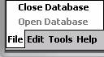
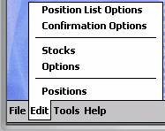
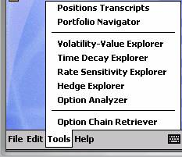
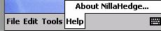
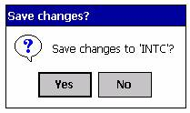

Introduction
NillaHedge is a set of tools built on a common database that allows you to manage your stock and option holdings, analyze option issues, explore hedging strategies, and compare how interest rate changes affect option issues and your portfolio of option positions. Following is a brief introduction to the capabilities of this Pocket-PC application software, starting with an overview of the main menus.
NillaHedge is not a document-centric application, which means upon invocation all you’ll see is the main menu and a blank screen. Switcher and similar utilities typically only include applications with open document windows in their list of running applications - the blank window gives Switcher something to find. If you don’t have Switcher or it’s equivalent, a tray icon will be available whenever NillaHedge is not the front most application.
The Menus
 When you first open NillaHedge,
you’ll see the menu at right.
When you first open NillaHedge,
you’ll see the menu at right.
File Menu
NillaHedge uses a database to store instrument definitions and portfolio positions that you create while using it. All instrument definitions and portfolio positions created are immediately committed to the database, so there’s no need to save at the end of a session. Just quit.
Open Database
Given the personal nature of Pocket-PCs, NillaHedge assumes that there is only one user and one database - it opens a database in a default directory upon invocation so you can get right to work. The only time you’ll need to use Open Database is after you have previously closed the database. This menu item is only enabled when the database is currently closed.
Close Database

If you can’t choose database directories, you might ask why include Open Database and Close Database at all? The answer is that ActiveSync won’t sync open files and an open database will probably have several files open. Therefore, if you ever want your database backed up, you can use Close Database to close it manually and then reopen it after ActiveSync has finished. This menu item is only enabled when the database is currently open.Edit Menu

The Edit menu is the entry point for creating and subsequently modifying instrument definitions and positions based on those definitions. Supported instruments include stocks and vanilla stock options (i.e. puts and calls). It also provides the entry point to the NillaHedge’s two preferences dialogs. All Edit menu items are always enabled.Stocks
The Stock Definition Dialog is a structured view of the data that defines a stock to the tools in NillaHedge, including its market price, volatility, and dividends.
Options
The Option Definition Dialog is a structured view of the data that defines a vanilla stock option to the tools in NillaHedge, including its market price, strike price, expiration date, underlying stock symbol, and whether it’s a put or a call option.
Positions
The Positions dialog is your entry point for creating a position in a option or stock issue. It captures the purchase date, number of units in the position, and the cost of the position. It also captures a ‘Note’ field, allowing you to annotate a transaction number or a source of cash for the transaction, etc.
It also displays any positions previously created for the specified option or stock issue, including purchase date, number of shares or options, the original cost of the position, its current market value, the capital gain (loss), any dividend income that would have been generated since the purchase date, the net gain (capital gain plus income), the annualized yield that the net gain represents, and any note you may have entered when you created the position. If the underlying issue is an option, the income column is replaced by the exercise value of the options in the position.
Position List Options
If you read the previous section on the Positions dialog, you can see that there are quite a few columns of data computed for each position. To manage that complexity within the confines of a small screen, each of the columns in the Positions dialog’s list of defined positions can be made invisible by un-checking the associated check box in the Position List Options dialog. The left column of preferences affects the display of columns in the Positions dialog while the right column of preferences affects the display of columns in the Portfolio Navigator.
Confirmation Options
The Confirmation Options Dialog controls behaviors spanning various dialogs. Two preferences affect behavior within definition dialogs (where you define a stock or an option issue), two affect behavior within the Option Analyzer dialog, two affect behaviors within the Positions dialog, and one affect behaviors within the Option Chain Retriever.[1]

Tools MenuThe Tools menu assembles a variety of tools in one place to accomplish a variety of tasks. One pulls option prices and other relevant information from the Internet, one is analytical, four are graphical, and two report the current state of your portfolio – one hierarchically, the other as a plain text transcript. Following is a brief introduction to each.
Option Chain Retriever
If you can access the internet from your Pocket-PC, the Option Chain Retriever will retrieve current prices, trading volume, and related information for options derived from a given exchange registered stock symbol. The Option Chain Retriever allows you to check current market prices, update the market price of existing option definitions, save new option definitions to the database, and update the market price of the stock underlying the option chain. This menu item is always enabled.
Option Analyzer
The Option Analyzer’s primary purpose is to report Black-Scholes value, a half dozen Greeks, elasticity, implied volatility, and the probability of closing in the money. Of secondary importance is the ability to experiment with alternative values of the risk free rate and the underlying stock’s volatility and market price to observe how such changes will affect the option’s market value. This menu item will be disabled if there are no options defined in the database.
Hedge Explorer
The Hedge Explorer is a graphical tool displaying profit/loss curves for multi-issue positions consisting of up to three options on the same underlying stock, possibly including the stock itself. The Hedge Explorer supports ratio spreads and short positions and allows the user to modify the evaluation date, risk free rate, stock price and volatility. It displays the profit/loss curve for the constituent issues as well as the aggregate profitability. This menu item is disabled when there are no stocks or options defined in the database.
Rate Sensitivity Explorer
The Rate Sensitivity Explorer provides a graphical view of how the value of options and portfolios of options are affected by interest rate changes. This menu item is disabled when there are no options defined in the database.
Time Decay Explorer
The Time Decay Explorer is a graphical tool which plots option values versus time. It supports two modes of operation – one completely based on Black-Scholes value, the other incorporating the option’s current market price. This menu item is disabled when there are no options defined in the database.
Volatility-Value Explorer
The Volatility-Value Explorer is a graphical tool which plots relative option value versus relative volatility of the underlying stock. Relative values are simply ratios of prospective volatility or option value divided by the currently stored value for the stock’s volatility or the option’s current Black-Scholes value, respectively. This menu item is disabled when there are no options defined in the database.
Portfolio Navigator
The Portfolio Navigator presents your current portfolio positions in a hierarchical explorer-like navigator, allowing you to drill down to the positions level within a particular stock or option, or abstract upwards in the tree until all you can see are column totals for the entire portfolio. Subtotals are provided at each level in the tree, i.e. the portfolio level, the instrument level (options or stocks), the issue level (particular stock and option issues), and the position level (issues you have a stake in). Background colors distinguish between row types to manage display complexity.[2] This menu item is disabled when there are no positions in the database.
Positions Transcripts
The Positions Transcripts dialog produces a detailed text transcript of all positions closed in a given year or currently open. It’s the textual equivalent of a position level Portfolio Navigator display. It allows you to save the contents of the transcript to a file, thus providing convenient tax time documentation. This menu item is only enabled when there are positions in the database.

Help MenuThe Help Menu currently contains only ‘About box’ information about NillaHedge.
Common Behaviors
This section covers various considerations common across tools in NillaHedge, including the precision with which numbers are stored, slight variations from the Windows’ standard behavior for combo-boxes, and an overview of database behavior and many behaviors common between the option and stock definition dialogs.
Floating Point Precision in the Database
Many of the edit boxes you’ll encounter in NillaHedge dialogs await and/or display a numerical value. Most of these values are stored with floating point precision (23 magnitude bits in the mantissa and 7 magnitude bits in the exponent), producing the equivalent of 6.9 significant decimal digits. Examples of this level of floating point precision include interest rates, dividend amounts, market prices, and volatility.
Number of shares or options in a position and the total cost of a position are all stored with double precision (52 magnitude bits in the mantissa and 10 magnitude bits in the exponent), producing the equivalent of 15.6 significant decimal digits. When either of these floating point representations is retrieved from the database and presented in a dialog control, it may be formatted with a fixed number of fractional digits, potentially truncating presentation of some of the significant digits. Be assured that the originally entered precision has not been truncated in the database, they’re just not being displayed.
Combo-box variations
In the interest of minimizing pen taps, NillaHedge combo-boxes operate slightly differently from the Windows standard. Suppose you’re using the drop-down portion of the combo-box and something in it is currently selected. If you tap somewhere in the dialog outside the drop-down box in a standard Windows application, it cancels the selection. By contrast, NillaHedge accepts the selection.
Instrument Definitions
It is useful to note that once saved, an instrument (stock or option) definition will be retained in the database forever, so it behooves you to limit the number of definitions you create to those that are actually meaningful. The storage occupied by an instrument definition is quite small, but NillaHedge thinks that each definition is equally significant, so the symbols for any junk definitions that may creep in will take up rows in the drop-down box when you’re trying to locate a definition later.
Instrument definition dialogs have three things in common. Each one has a combo-box where you can type or select the unique symbol associated with the instrument definition, an edit box for the instruments’ current market price, and an edit box labeled ‘Description’ whose contents serve no other purpose than confirming that you’ve recalled the definition you thought the symbol represented.
Symbol
The Stock Definition Dialog refers to a stock symbol and the Option Definition Dialog refers to an option symbol. The concepts are identical, but uniqueness is instrument dependent, meaning that you can define a stock and an option with the same exact symbol and they won’t collide with one another in the database. You might confuse yourself by having an option and a stock named Ford, but the database will keep them straight. Any string of characters will suffice as the symbol - however, using the generally accepted exchange registered symbols have benefits discussed in the next section.
The database locates instrument (stock or option) definitions using the symbol you provide in the control located in the top left area of the dialog. This control is a combo-box, which means it has both edit and drop-down capabilities. You can recall instrument definitions by selecting a symbol from the drop-down box, or by a combination of ‘typing’ and scrolling. It supports auto-completion, so the typing required on recall is minimal. There’s no sense going to extra effort for first letter capitalization because all symbols are forced into upper case when the instrument definition is saved to the database.
Using an exchange registered symbol
You can use any arbitrary symbol in an instrument definition, but there are advantages to using exchange registered symbols. For example, suppose you set up your database using ‘AMAT’ as the symbol for Applied Materials Inc. Later, you use the Option Chain Retriever (in the Tools menu) to download options derived from Applied Materials stock. In the process of fetching option pricing and volume information, the Option Chain Retriever will automatically update the price of Applied Materials stock. The benefit of using the exchange registered symbol is that you can run with the preference to confirm stock price updates disabled (in the Confirmation Options dialog), and let stock price updates sail through without intervention. The default is to let the stock price updates go through without confirmation.
Conversely, if you had used ‘AMAT’ to refer to Amalgamated Mining and Technologies in your database, and you subsequently desire to use the Option Chain Retriever to get the options for ‘AMAT’ (by which the rest of the world refers to Applied Materials Inc), you could potentially overwrite the price of your AMAT with the current market price of Applied Materials. ‘Potentially’ enters the game because you can require that NillaHedge confirm all stock price updates from the Option Chain Retriever by setting a preference in the Confirmation Options dialog, so you have the opportunity to cancel the update if you come to your senses just before the price would get committed to the database. Obviously, this is only a patch on a bad situation - you have forced yourself into manually updating prices for AMAT forever.
A similar situation exists for option symbols.
Saving an Instrument Definition
Suppose that you haven’t modified the default values of the confirmation options and have just defined an instrument with the symbol ‘INTC’.

When you click the OK button in the upper right hand corner of the dialog, a confirmation dialog like the one at left will be displayed. Screen space on the PocketPC is precious and many of the dialogs are packed with controls, so instrument (stock and option) definition dialogs post a small confirmation dialog, asking you to confirm or cancel saving the changes you’ve made to the definition as a substitute for explicitly including a Cancel button. When you initially define an instrument, it may seem superfluous to ask if you really meant to save the definition, but later when you’re editing a preexisting definition, the opportunity to cancel the save may prove more useful.Confirmation Options
If you’d rather opt out of confirmations like these, you can use the Confirmation Options dialog to uncheck the preference labeled ‘Definition dialogs – close’. When this preference is unchecked, subsequent close events in any of the three instrument definition dialogs will simply update the database without asking permission.
If you’ve already detoured through the Confirmation Options, you may have noticed a preference labeled ‘Definition dialogs – change symbol’. This preference operates similar to ‘Definition dialogs – close’, but is triggered by changing the value of the stock symbol while one or more of the remaining dialog controls contains a value different from the associated value in the database. Naturally, if confirmation is enabled and you’ve never saved an instrument definition with that symbol before, then a confirmation dialog will post no matter what state the controls are in.